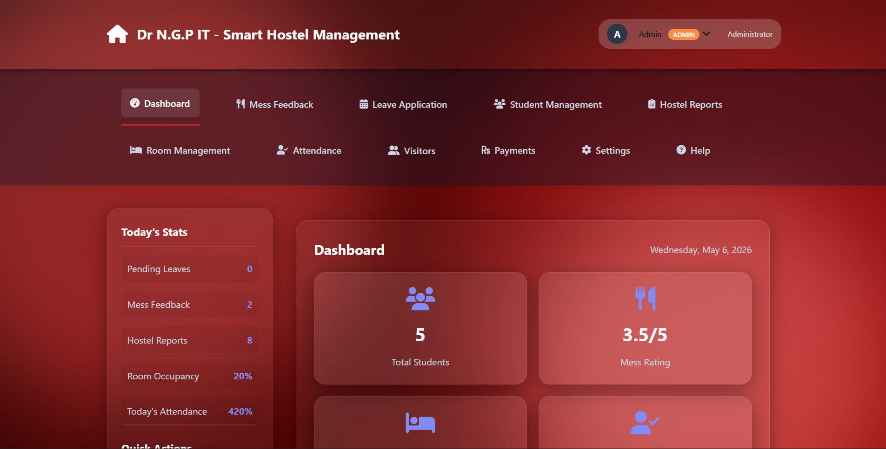
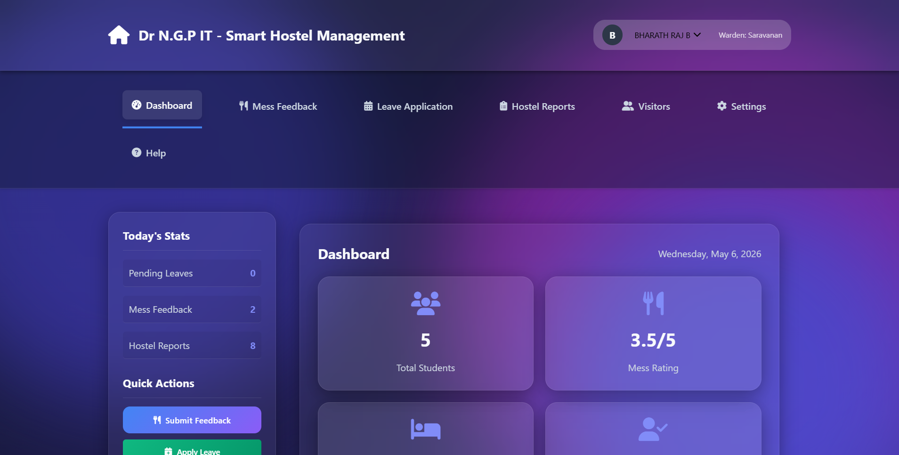

1. Project Overview
A comprehensive web-based platform built to digitize and streamline hostel administration operations. Expanding across 10 distinct modules, it supports an active user base of over 300+ students and administrators.


2. Problem Statement
Traditional hostel operations relied on paper logs for attendance, complaints, and leave requests. Information retrieval was slow, resulting in manual errors and delayed resolution times for student issues.
3. My Approach
I utilized the MERN stack for rapid, scalable development. To handle variable network conditions inside hostel environments, I implemented an aggressive localStorage caching fallback strategy. Secure role-based access control partitioned student tools from high-level administrative overviews seamlessly.
4. Key Results & Impact
Digitizing these processes dropped average grievance resolution time while completely automating attendance logging. Features like the dark/light UI toggle drastically improved student user satisfaction.